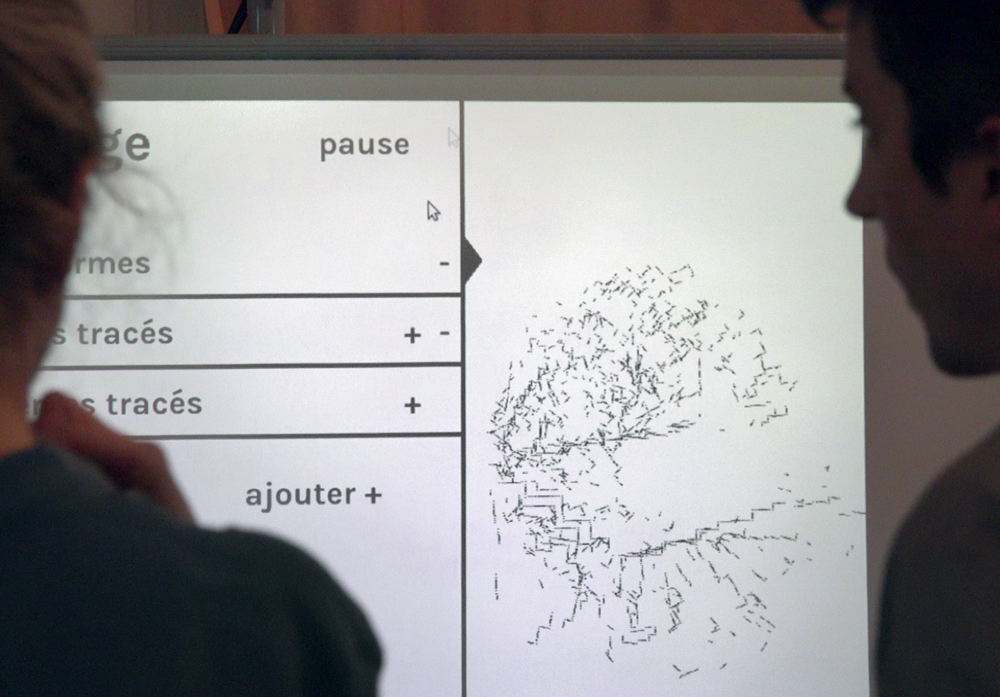
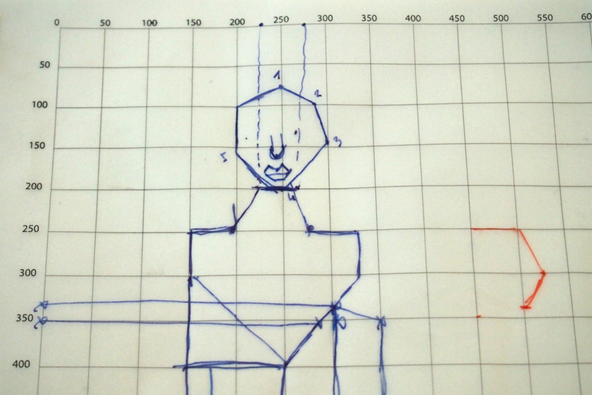
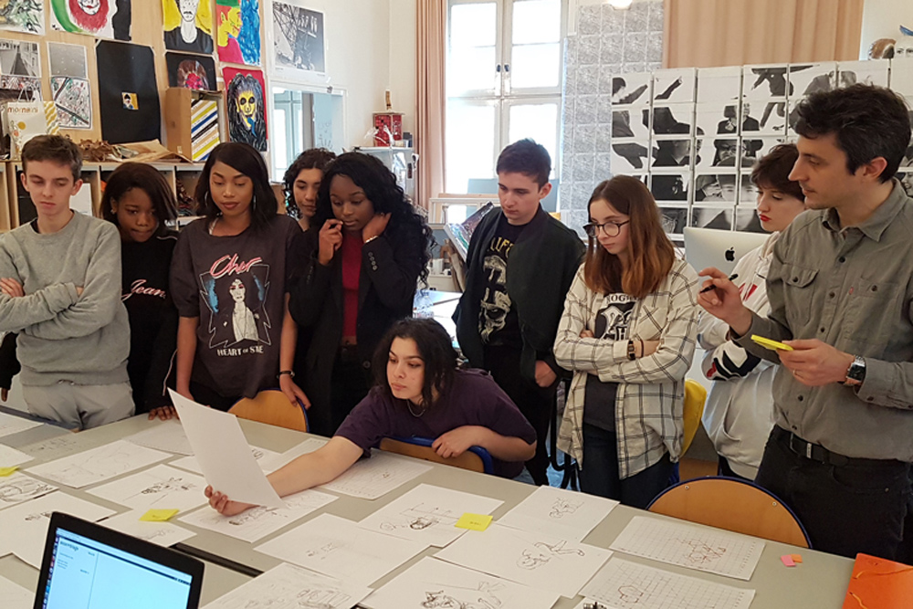
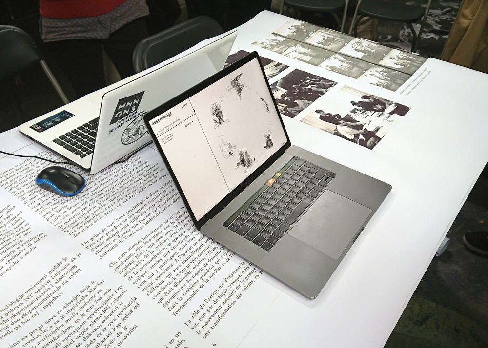
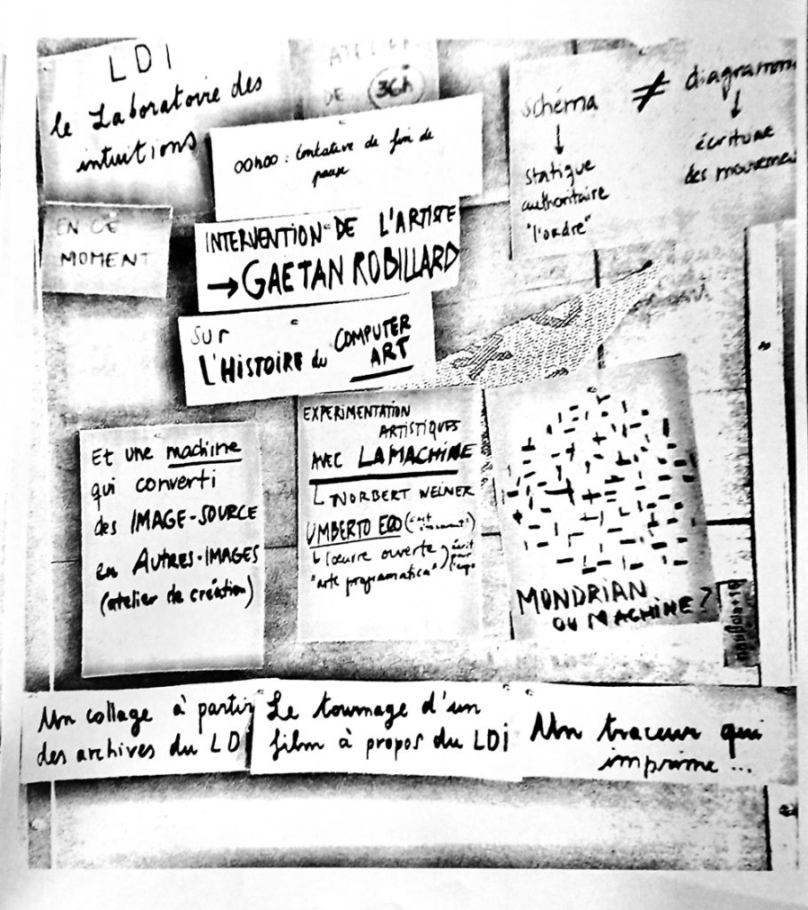
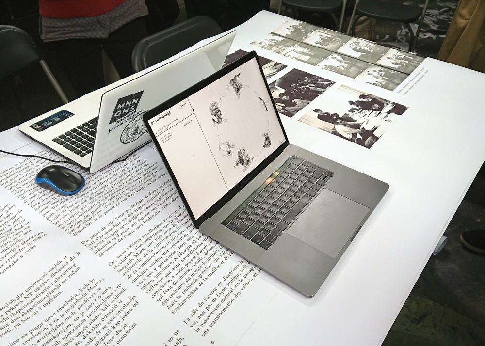
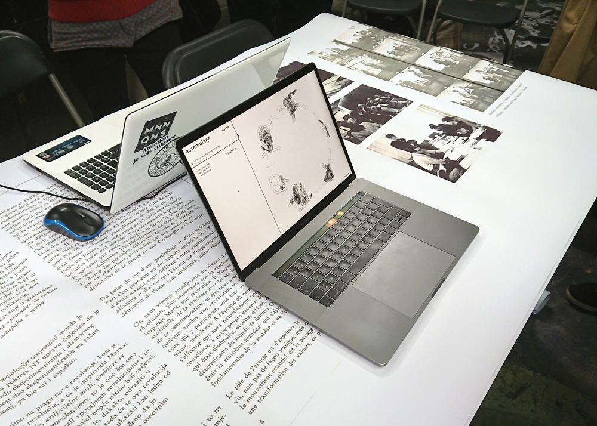
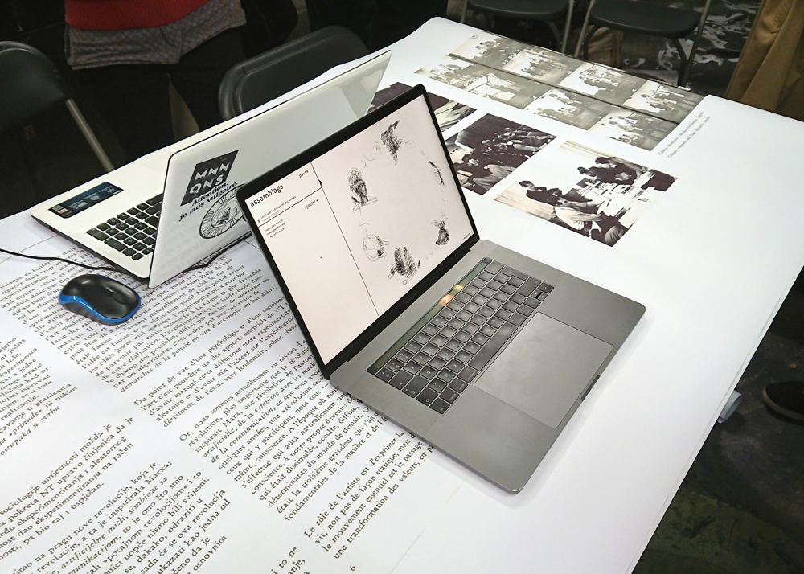
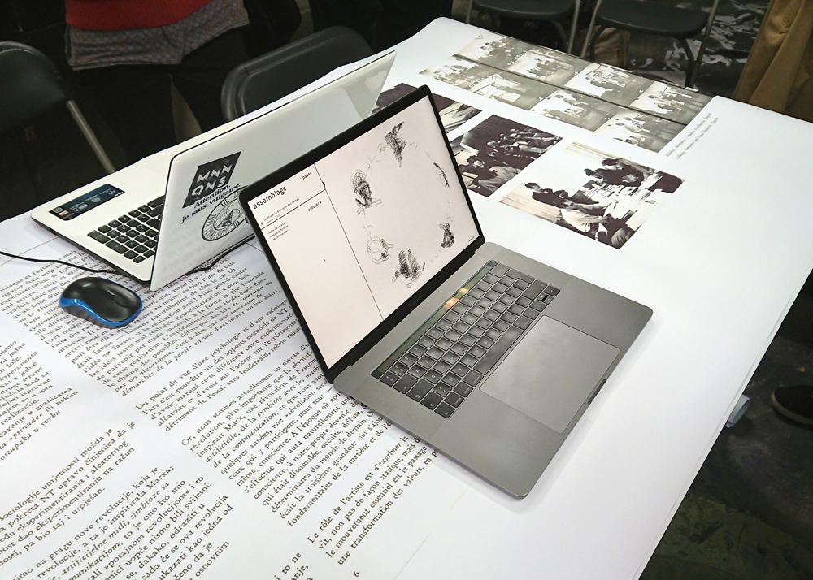

Ateliers Publié le 19 juillet 201823 juillet 2018 par mbarbi03 Lycée Colbert – Gaîté Lyrique    Nous ne sommes pas le nombre que nous croyons être 2 février 2018, Cité internationale des arts, Paris   Publié par mbarbi03 Afficher tous les articles par mbarbi03

 
 
